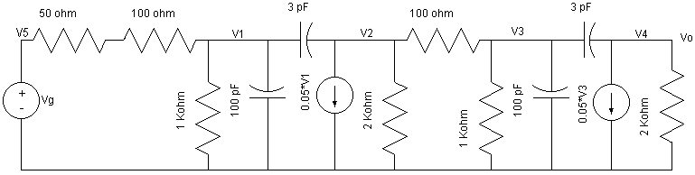
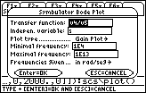
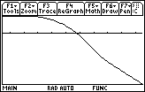

A12 FD analysis: Huge circuit with Bode plot.
Question. Plot the Bode gain diagram for Vo/Vg from 10^4 to 10^13 rad/seg for the following circuit.

Solution:
Clean symbolic variables.
DelVar vg
Number nodes. Describe circuit. Simulate it with FD, and call the Bode plot tool:
sq\fd("e1,5,0,vg,0; r1,5,1,150,0; r2,1,0,1000,0; cc1,1,0,10^-10,0; cc2,1,2,3*10^-12,0; jd1,2,0,5/100*v1,0; r3,2,0,2000,0; r4,2,3,100,0; r5,3,0,1000,0; cc3,3,0,10^-10,0; cc4,3,4,3*10^-12,0; jd2,4,0,5/100*v3,0; r6,4,0,2000,0") :sq\bode()
Notice that we prefered to use exact values. Wait a few minutes. When the dialog appears, fill the blanks with the right information:


Answer: The diagram obtained is the right one.